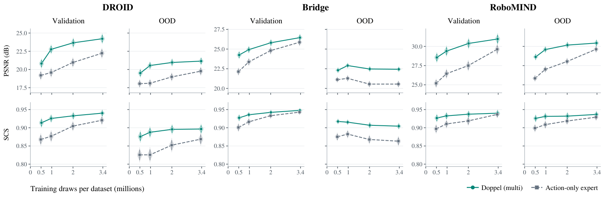

Camera calibration
Missing or inconsistent camera extrinsics are recovered during dataset preprocessing by aligning rendered robot trajectories with the recorded video.
Anonymous submission · Robot world models
Doppel is a shared video world model conditioned on future robot renderings and numerical actions.
Overview
Doppel combines future robot renderings with the numerical action trajectory. The renderings describe the robot’s geometry and motion in the image; numerical actions retain configuration information that may be visually ambiguous.
We train a shared conditioning adapter and video backbone on DROID, RoboMIND, and Bridge, covering Franka, UR5e, and WidowX. Robot-specific geometry and normalization are used to construct the inputs.
01 / Overview
Doppel uses future embodiment renderings to improve robot–object interaction modeling. A shared model predicts future scene changes for Franka, UR5e, and WidowX.
02 / Method
Doppel encodes camera-aligned robot renderings with a frozen VAE and fuses their features with numerical actions.
Missing or inconsistent camera extrinsics are recovered during dataset preprocessing by aligning rendered robot trajectories with the recorded video.
Render tokens supply the queries, and action tokens supply the keys and values in cross-attention.
All trainable parameters are shared across embodiments. The model uses no embodiment tokens or robot-specific heads.
03 / Qualitative results
Ground truth, action-only, and Doppel predictions. Action-only models are trained separately for each dataset.
10 examples · DROID · OOD
04 / Quantitative results
PSNR, SSIM, LPIPS, and object SCS on the validation and OOD test sets.
| Dataset | Method | PSNR ↑ | SSIM ↑ | LPIPS ↓ | SCS ↑ |
|---|
Action-only models are trained separately on each dataset. Metrics exclude the conditioning frame. SCS averages over non-robot objects. Higher is better except for LPIPS.
